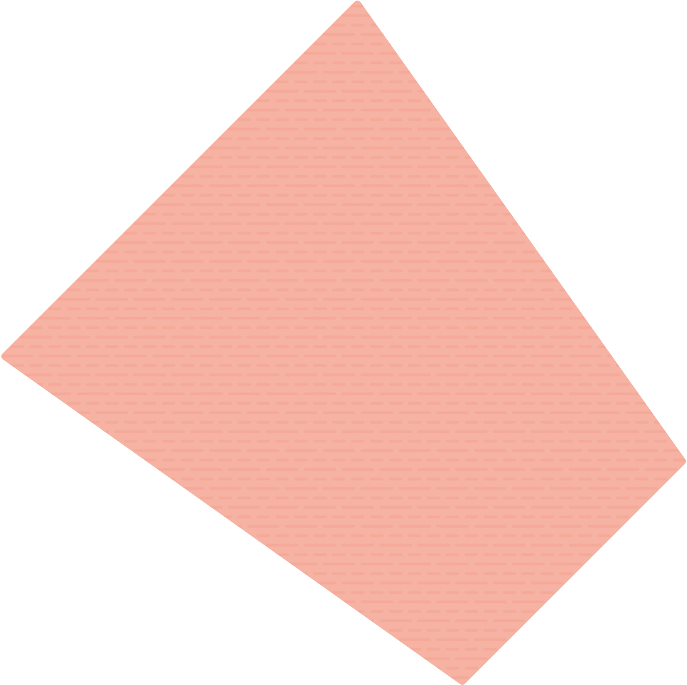
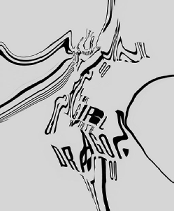
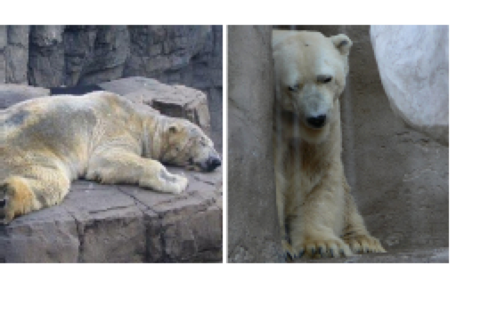
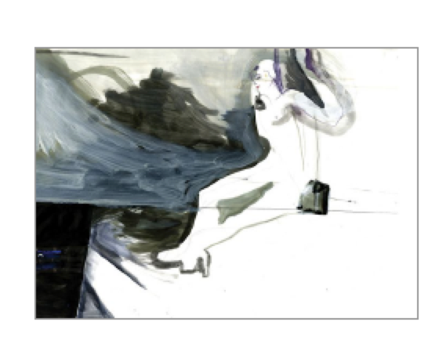
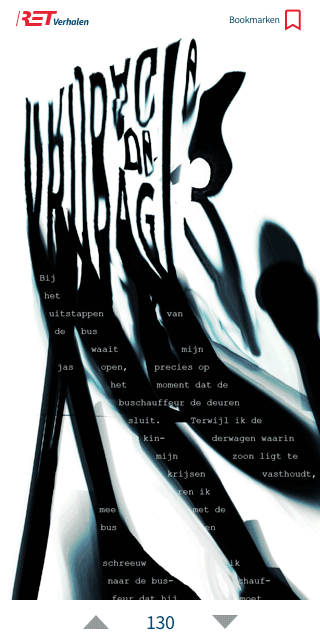
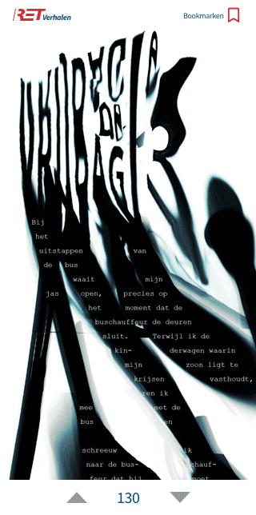
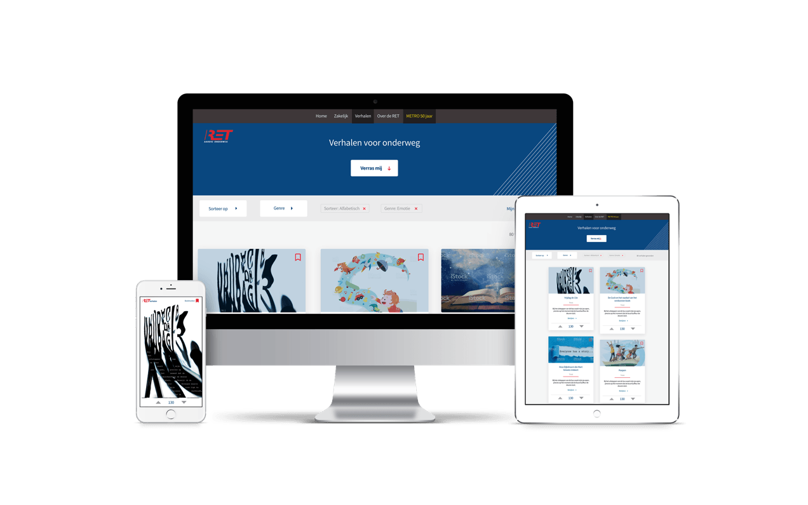

Visual research
Na het kiezen van een verhaal formulier je een sfeerwoord. In dit geval ‘Triets’. Doormiddel van dit sfeerwoord ga je opzoek naar sfeerbeelden. Een beeld dat ‘triest’ uistraald. In ditgeval een IJsbeer ineen gedoken tegen een grauwe muur, in een dierentuim. Aan de hand van dit beeld ga je opzoek naar kleur/vorm. Veel grijs komt voor in de afbeelding met de IJsbeer. Ook een ineengedoken vorm, een vorm die terug komt in de middelste afbeelding. Het in eengedoken leek mij een interessant uitgangspunt. De volgende stap was typografie. Ik zocht naar afbeeldingen waar typografie in eengedoken, bijna verscheurt werd.
Na het kiezen van een verhaal formulier je een sfeerwoord. In dit geval ‘Triets’. Doormiddel van dit sfeerwoord ga je opzoek naar sfeerbeelden. Een beeld dat ‘triest’ uistraald. In ditgeval een IJsbeer ineen gedoken tegen een grauwe muur, in een dierentuim. Aan de hand van dit beeld ga je opzoek naar kleur/vorm. Veel grijs komt voor in de afbeelding met de IJsbeer. Ook een ineengedoken vorm, een vorm die terug komt in de middelste afbeelding. Het in eengedoken leek mij een interessant uitgangspunt. De volgende stap was typografie. Ik zocht naar afbeeldingen waar typografie in eengedoken, bijna verscheurt werd.
Resultaat
De beelden hier boven heb ik verwerkt in de vormgeving van het verhaal.
De beelden hier boven heb ik verwerkt in de vormgeving van het verhaal.
Micro interactie
Na een uitgebeird onderzoek naar micro interacties heb ik zelf twee interacties ontworpen en geanimeerd.
Het onderzoekproces is hier te downloaden. Hier onder is het resultaat.



Na een uitgebeird onderzoek naar micro interacties heb ik zelf twee interacties ontworpen en geanimeerd.
Het onderzoekproces is hier te downloaden. Hier onder is het resultaat.
Vak
Project Web
Leerjaar 2, blok 2
Periode
Visual design
Categorie
Sketch, Photoshop, Illustrator
Tools
De opdracht
RET (Rotterdamse Elektrische Tram) wilt een redesign van hun huidige website waar de ervaring van de website verbeterd wordt. Dit moet gedaan worden met bieden van vermaak voor tijdens de reis. Er zullen 99 verhalen, ieder met een unieke visuele presentatie, geupload worden op de website. De verhalen zijn zo vormgegeven dat ze beschouwd kunnen worden als kunstwerken.
Werkwijze
Een verhaal naar keuze werd goed doorgelezen om een sfeer woord te bepalen. Aan de hand van het sfeer woord wordt er een Visual Research gedaan om inspiratie op te doen. Er werd gekeken naar beelden/fotografie, kleur en typografie. Hieruit werd een concept verzonnen om vervolgens een vormgeving te creëren die aansloot bij de tone of voice van het verhaal. Naast de vormgeving van een verhaal moest er ook een nieuwe pagina ontwikkeld worden voor de RET website om de verhalen op te plaatsen. Door de huidige website goed onder de loep te nemen kon ik een style tile en breakpoint graph maken om de website goed na te maken en de verhalen op een goede manier te implementeren. Om het gebruik van de website wat aangenamer te maken voor de bezoeker heb ik twee micro interacties ontworpen. Deze interacties zorgen voor kern functionaliteiten die de bezoeker kan gebruiken om het zichzelf makkelijker te maken.
Bekijk hier onder het eind resultaat. Voor het volledige design document klik hier.
RET (Rotterdamse Elektrische Tram) wilt een redesign van hun huidige website waar de ervaring van de website verbeterd wordt. Dit moet gedaan worden met bieden van vermaak voor tijdens de reis. Er zullen 99 verhalen, ieder met een unieke visuele presentatie, geupload worden op de website. De verhalen zijn zo vormgegeven dat ze beschouwd kunnen worden als kunstwerken.
Werkwijze
Een verhaal naar keuze werd goed doorgelezen om een sfeer woord te bepalen. Aan de hand van het sfeer woord wordt er een Visual Research gedaan om inspiratie op te doen. Er werd gekeken naar beelden/fotografie, kleur en typografie. Hieruit werd een concept verzonnen om vervolgens een vormgeving te creëren die aansloot bij de tone of voice van het verhaal. Naast de vormgeving van een verhaal moest er ook een nieuwe pagina ontwikkeld worden voor de RET website om de verhalen op te plaatsen. Door de huidige website goed onder de loep te nemen kon ik een style tile en breakpoint graph maken om de website goed na te maken en de verhalen op een goede manier te implementeren. Om het gebruik van de website wat aangenamer te maken voor de bezoeker heb ik twee micro interacties ontworpen. Deze interacties zorgen voor kern functionaliteiten die de bezoeker kan gebruiken om het zichzelf makkelijker te maken.
Bekijk hier onder het eind resultaat. Voor het volledige design document klik hier.
Project Web
Bookmark animatie
Beeld
Kleur/vorm
Typografie
Vote animatie